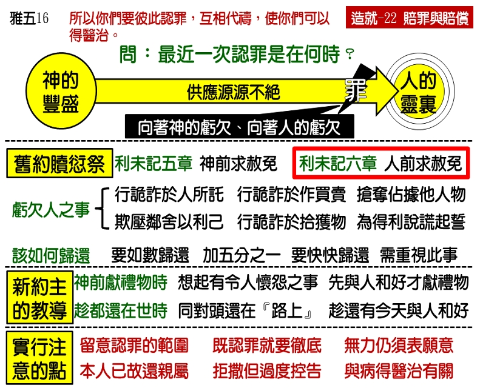

诗歌：311 首、540 首
重要经文：
马太福音五章二十三至二十六节：所以你在祭坛前献礼物，若想起你的弟兄向你怀怨，就要把礼物留在坛前，先去与你的弟兄和好，然后来献礼物。你同告你的对头还在路上，要赶紧与他和息，免得他把你交给审判官，审判官交给差役，你就下在监里了。我实在告诉你，非到你还清最后一分钱，你绝不能从那里出来。
雅各书五章十六节上：你们要彼此认罪，互相代祷，使你们可以得医治。
纲目要点：
壹 无亏的良心。
贰 利未记第六章的赎愆祭：
一 六样亏欠人的罪。
二 怎样归还：
1 要如数归还，不还不行，少还也不行。
2 神要我们还的时候，还要加上五分之一。
3 赔罪和归还，应当越快作越好。
4 不要以为这是很浅的事，一不小心，我们就亏欠人。
参 马太福音第五章二十三至二十六节的教训：
一 你在祭坛上献礼物的时候，若想起弟兄向你怀怨。
二 你同告你的对头还在路上，就赶紧与他和息。
三 不能马虎，不能随便，要趁着还有今天，赶紧同弟兄和好。
肆 实行时应注意的六点：
一 得罪的范围有多大，认罪的范围也有多大。
二 认罪的时候，总要彻底，不能为了情面或利益而有所隐藏。
三 若是没有力量赔偿，总得有愿意赔偿的表示。
四 如果本人不在，就还给他的亲属。
五 认罪的时候，不要让撒但给你过度的控告。
六 认罪和疾病得医治也有关系。
信息选读：
无亏的良心
良心一变成刚硬，就会有一个基本的困难发生，那就是神的光很不容易在他身上照亮。人必须有这一种赔罪和赔偿的习惯，才能保守他在神面前有一个敏锐的良心。
有一位为主作工的弟兄，常常喜欢问人一句话： 『你最近一次的向人赔罪，是在什么时候？』一个人最近一次的向人赔罪如果是隔了许多年，那么这个人的良心必定有了问题。因为人得罪人是常有的事，如果人得罪了人而没有什么感觉，这就证明这一个人的良心有毛病，不够正常。所以，只要看你最近一次向人赔罪离开现在时间的长短，就能知道你与神中间有没有出事情。隔开的时间长，就证明在灵里面缺了光；隔开的时间短，在最近还向人赔过罪的，这就证明良心的感觉相当敏锐。我们要活在神的光中，就需要有一个能感觉的良心。要我们的良心有感觉，我们就得在神面前继续的在那里定罪为罪。我们要向神认罪，我们也要向人赔罪或赔偿。
利未记六章二至七节六样亏欠人的罪
第一，在邻舍交付他的物上，行了诡诈。别人把东西托他保管，他故意把好的、有价值的、他所喜欢的留下，把不好的换给人，这是有诡诈在里面，这在神面前是犯了罪。第二，在交易上行了诡诈，或者说在买卖上行了诡诈。在交易上，在买卖上，行了诡诈，撒了谎，用不正当的方法去营利，把不该得的东西变成自己所有的，这在神面前是犯了罪，应该严格的对付。第三，抢夺人的财物。虽然这一个也许在弟兄中间不会发生，但是这话非说不可。没有一个人可以用抢夺的方法去得着任何的东西。如果有人借着地位权势去得着东西，叫任何别人的东西变作他自己所有的，这是罪。第四，欺压邻舍。人用任何的地位，用任何的势力，欺压别人，叫自己上算的，这都是罪。从神的眼光来看，神的儿女不可作这样的事。这一种的行为，是非对付不可的。第五，在捡了遗失的物上，行了诡诈。这一点，初信的人特别要注意。在别人遗失的物上，有许多人行了诡诈。无论用那一种不义的方法，把别人所有的变作自己的，都是错的。第六，说谎起誓。因着任何物质的东西说谎起誓的，都是罪。你如果在任何的东西上，有任何的不诚实在里面，有任何叫你自己多得着，而叫别人吃亏的，有从这六样不同的方法里得来的，你就得好好的去对付这些罪。
怎样归还亏欠
利未记六章所说的犯罪是在物质上叫人受了亏的，那就非归还不可。你光是借着祭来『挽』不够；你必须要『还』才够。所以说，『他既犯罪有了罪过，就要归还他所抢夺的。』所有犯罪得来的都必须归还。归还他所抢夺的，归还他用欺压所得着的，归还人所交付他的，归还人遗失被他所捡得的，或者归还他因什么物起了假誓而得的。这些都要归还。
应该怎样归还呢？『他要全数归还，另外加上五分之一，在查出他有罪过的日子交给本主。』在这里，有三件事情要注意：第一，要如数归还，不还不行，少还也不行。没有一个人能够以为向人认罪就行了。那一件东西老是摆在你家里，就证明你不对，你非如数归还不可。第二，神不只要我们如数归还，神要我们还的时候，还要加上五分之一。为什么要加上五分之一呢？原则是这样：你总要还得充分。我们赔罪或赔偿的时候，加上五分之一，有一个好处，就是使你知道得罪人是亏本的事，下次不能再作了。第三，这一种的赔罪和归还，应当越快作越好。这里说，『在查出他有罪过的日子交给本主。』如果你有力量，如果那一件东西还在，那么在查出有罪的日子，就得归还。
马太福音第五章二十三至二十六节的教训
马太五章二十三至二十六节：『所以你在祭坛前献礼物，若想起你的弟兄向你怀怨，就要把礼物留在坛前，先去与你的弟兄和好，然后来献礼物。你同告你的对头还在路上，要赶紧与他和息，免得他把你交给审判官，审判官交给差役，你就下在监里了。我实在告诉你，非到你还清最后一分钱，你绝不能从那里出来。』这里所说的一分钱，不是专指在物质上的一分钱，这里的意思乃是指那一个亏欠说的。
主说，『所以你在祭坛前献礼物，若想起你的弟兄向你怀怨…。』这是特别说到神的儿女之间的事，弟兄和弟兄之间的事。你到祭坛上去献礼物给神，你在那里向神有所献的时候，你忽然想起弟兄向你怀怨，这一个『想起』就是神给你的引导。许多时候，关于这一类的事，圣灵会将合式的思想摆在你里面，会将合式的记忆摆在你里面。当你在那里记得的时候，当你在那里想起的时候，你不要把那一个思想摆在旁边，以为这不过是思想而已，你应当一想起那一件事，就去对付清楚。
赔罪与赔偿在实行上六点的讲究
第一，你得罪的范围有多大，你认罪的范围也有多大。要照着神的话去作，不要走极端的路，不要过度。第二，在认罪的时候，总要彻底，不能为了你自己的情面或利益而有所隐藏。但是，有的时候，为了对方的益处，别人的益处，你应该好好的寻求，怎样认罪才是最好。第三，关于赔偿的事，有时候，也许你的力量不及；但力量不及是一件事，存心要赔偿又是一件事。有的人虽然没有力量赔偿，可是，愿意赔偿的表示总得有。第四，按着旧约圣经的命令，如果应该接受你赔偿的人已经去世了，如果他也没有亲属可接受所赔偿的，那就要把所赔偿的归与服事耶和华的祭司。（民五 8。）第五，认罪的时候，要特别注意不要受良心的控告。第六，认罪和疾病得医治也有关系。雅各书五章十六节，『你们要彼此认罪，互相代祷，使你们可以得医治。』认罪的结果是神医治疾病。许多时候，在神的儿女中间有事情拦阻的时候，自然而然会产生疾病。如果彼此认罪，病就除去。盼望弟兄姊妹对于赔罪和赔偿能彻底的作，一直保守自己的清洁。如果有得罪人的地方，一面要在神面前认罪，一面要认真在人面前对付，这样，良心就能刚强起来。良心刚强了，才能在属灵的路上有进步。
课程复习：
一 您最近一次的向人赔罪，是在什么时候？
二 利未记六章2—7节说到哪六样亏欠人的罪？
三 为什么神要人在对钱财亏欠的事上，还要另外加上五分之一？
四 若有一分钱没有还清，你绝不能从那里出来，这句话是指什么说的？
五 我们在赔罪与赔偿的实行上，要注意哪六点的讲究？
